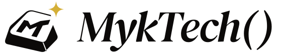
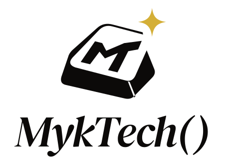
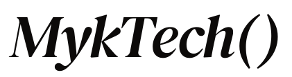
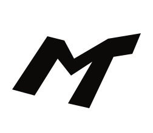
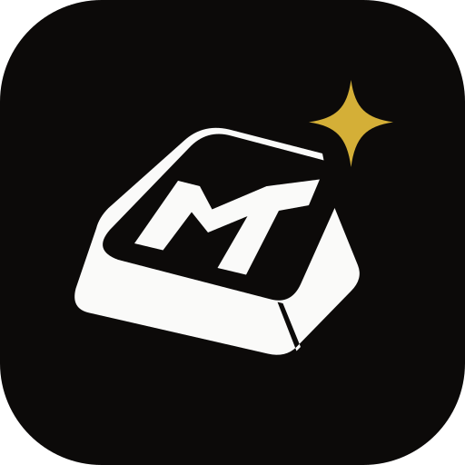
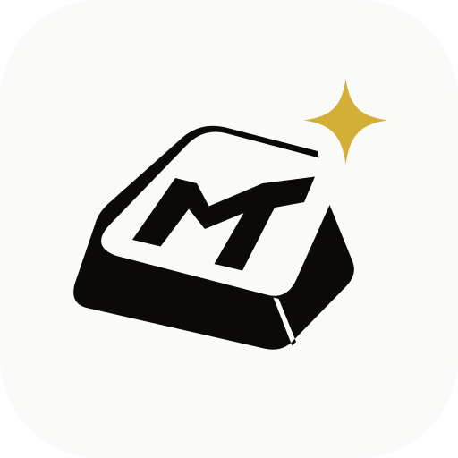
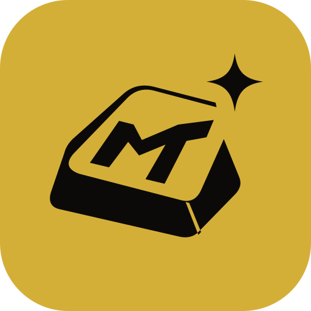

An idea.
A keystroke.
A beginning.
MykTech() / Ignition.
A studio identity with a spark of life.

A keyboard keycap is where an idea becomes an action. The M/T on its face identifies MykTech(); the open corner releases a gold spark. Together, they form Ignition: turning ideas into working software.
Myk is your leader’s name. Expressive italic lettering gives that personal name a recognizable voice, while Tech() anchors it in software. Warm white, deep black and a measured touch of gold hold the system together.
One family.
Every format.
Use the horizontal logo by default. Choose the arrangement that fits the space.









16–39px optical version

Give it room.
Clear space protects recognition. The export canvas includes only safety padding; add clear space in the layout.
x = one eighth of the emblem width
Measure the complete emblem, including the spark. Keep at least x clear on every side of the visible artwork.
One approved arrangement at a time.
Scale the whole SVG proportionally. Keep the supplied spacing between symbol, name, and parentheses. Keep the keycap’s original angle.
Use the right optical size.
At 40px and above, use the complete emblem. At 16–39px, use the MT-only micro mark; the cap and spark are omitted for clarity. Below 16px, increase the available space.
Decorative outline only.
The outline is for oversized footer treatments, at least 600px wide. Use a solid logo for identity, small text, and print.
| Arrangement | Screen | Use | |
|---|---|---|---|
| Horizontal | 160px | 36mm | Primary identification |
| Wordmark | 120px | 27mm | Minimal identification |
| Stacked | 160px | 36mm | Square or vertical formats |
| Signature | 320px | 72mm | Tagline must remain readable |
| Symbol / micro | 40px / 16px | 10mm / 5mm | Known-brand and tiny contexts |
Keep the identity consistent: avoid stretching, rotating, shadows, gradients, added outlines, missing parentheses, separate colors within the name, and placing the logo directly over busy imagery. Use a quiet solid panel when a photo is involved.
Black. White.
A little gold.
Monochrome carries the identity. Gold marks a deliberate moment.
#E7E5E4Rules and quiet surfaces#78716CSecondary text on paper#8C6D1FAccessible gold text on white70 / 20 / up to 10
On light pages, roughly 70% white, 20% black, and no more than 10% gold. In dark mode, invert the white and black. Leave generous quiet space.
Contrast comes first.
Ink on paper and paper on ink are the default pairings. Gold on ink works well. For body text on white, use gold ink (#8C6D1F), rather than accent gold.
Flat color. Consistent output.
Use the supplied gold as a flat RGB color. The gold PNG is a color, rather than a metallic texture. Ask the printer for a physical proof before choosing CMYK, foil, or a spot ink.
Click a primary swatch to copy its hex value.
Familiar words.
Considered details.
Expressive serif lettering for the logo. Precise Geist typography for the website and everyday communication.
Software, designed
with intent.
Aa Bb Cc Dd Ee Ff Gg Hh
0123456789 () / +
Display
Geist Medium / 500
Tracking −0.03em
Compact line-height, 1.0–1.1
Body & interface
Geist Regular / 400
Normal tracking
Line-height 1.5–1.6
Details
Geist Mono / 400
Metadata and measurements
Use sparingly, with +0.12em tracking
The logo is artwork.
The supplied wordmark is based on DM Serif Display Italic, with adjusted spacing and a clean native k terminal. Use the SVG rather than retyping the name to reconstruct the logo. In ordinary writing, spell the brand MykTech(), with capital M and T and no spaces inside the parentheses.
The logo source font, website webfonts and their SIL Open Font Licenses are included. The logo files themselves have no font dependencies.
Made to be used.
A consistent mark across the places your studio shows up.
We build software
that feels designed.

Software, designed with intent.
Dipolog City, Philippines


Small spaces, clear recognition.
Use the keycap emblem for profile pictures and app tiles. Social platforms usually apply their own mask; use the full square safe-area export when a platform requires one.
The website’s favicon, PWA icons, preloader, social preview, and footer use this same family.
Everything,
ready to hand off.
Use SVG wherever it is supported. Use transparent PNG for slide decks and everyday tools.
Inside the kit
- 35 vector assetsSix arrangements in five color treatments; two outline versions; three avatars.
- 33 PNG exports2400px-wide lockups; 1024px-wide symbols and avatars. Logo backgrounds are transparent.
- Visual guidelinesThis offline HTML guide, a printable PDF, and the overview board.
- Brand tokens & fontsCSS variables, JSON values, local source fonts, self-hosted WOFF2 files and font licenses.
- Digital applicationsSocial cover, email signature, and favicon files.
File names explain the choice.
myktech-horizontal-primary.svg
myktech-stacked-white.png
myktech-symbol-gold.svgFirst the brand, then the arrangement, then the color.
Choose a format.
SVG: websites, scalable artwork, Figma, Illustrator and print workflows.
PNG: documents, presentations, social posts and tools that require a bitmap.
For production print
SVG artwork is scalable and outlined. Supply it to your printer, confirm the final dimensions, and approve a color proof for the chosen paper and ink.